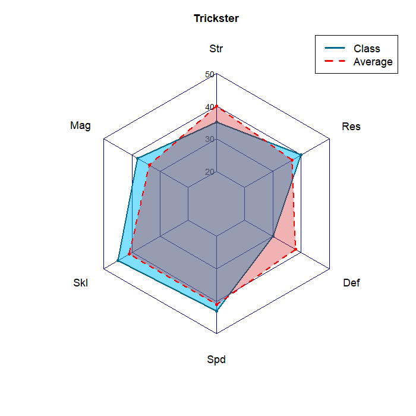

Assignment 5: More Graphs
Introduction
For this assignment, I used the same data set but tried to represent different uses of the graphs to understand the strengths of them. The data comes from my favorite game, Fire Emblem Awakening, and it is the maximum stats of each class. The goal is to get an understanding of the strengths of each class as well as understand of why certain classes are better than others. The table form of the data can be found here, in the promoted class section (There are 2 special classes that are included in the table as they are playable in the base game). For this, we are only interested in the stats that vary (STR,MAG,SKL,SPD,DEF,RES), as the other two (HP,LCK) do not change between classes. Here is a description of the stats that we are looking at:
Str - Strength, increases physical damage
Mag - Magic, increases magic damage
Skl - Skill, affects hit rate
Spd - Speed, affects dodge rate, and if 5 more than opponent you get to hit twice
Def - Defense, reduces physical damage
Res - Resistance, reduces magic damage
Average Stats
The first thing we want to look at is the average stats of all the classes combined. This gives us some insight into how we might expect a specific class to interact with the average case scenario.
Total Stats
The first thing that we can look at is the sum of each stat to see how different rank. More stats is good, therefore we might have an expectation that classes with lots of stats are generally the best. Furthermore, units will generally specialize in dealing a specific type of damage depending of the weapons that class can wield. Units that are classified as Physical can only wield swords, axes, lances, bows, or stones. Units classified as Magic can only wield Staffs or Tomes. Hybrid Classes can wield a mix of either. It is worth noting that Physical units can still deal magic damage through special weapons (and thereby have a use for their magic stat), but Magic units can not deal physical damage at all.

From this table We might expect that the General class is the best class in the game, while the Taguel is the worst class in the game. But there are some more complexities that we need to think about, specifically how each stat is distributed in the class.
Stat Distribution
Below is a radar plot of each stat for all of the classes:
This is a lot to look at so lets take a look at a couple of specific classes, and overlay each one with the average stats to better understand what we are looking at. As an example, we will first look at the General class as that one was the highest up on the stat total.
General
At first this may seem good, however it has a major weakness in its speed and resistance, meaning that it will likely die after 1 battle against people that deal magic damage while not being able to utilize its massive strength stat. Another good example would be to look at a class that scored pretty low on the ranking, like the Trickster.
Trickster

This class does not dwarf the average scenario like the general does, but it trades it off with some flexibility. The class has an above average speed stat, as well as being a hybrid class which allows the unit to better counter classes with specific damage weaknesses, like the General. The unit is fairly weak defensively, but that is manageable because it is not likely to be doubled in a turn like the General is. Overall, while not the best class in the game, it is a solid class with options, unlike the paladin which is just generally great.
Paladin
The Paladin does not have any clear weaknesses, while also being stronger and tankier. This allows any paladin to be flexible and easily specialize into any kind of role, without having any clear path to beat them easily. Overall, the Paladin is one of the best classes in the game, as it has a strong stat distribution as well as plenty of stats to work with.